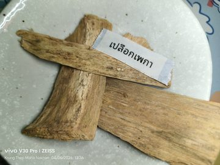

คลิกที่ภาพเพื่อดูความละเอียดสูง (1600px)
รสยา
- เปลือกต้น — รสฝาดเย็นขมเล็กน้อย
- ฝักแก่ — รสขม
- ฝักอ่อน — รสขมร้อน
- เมล็ดแก่ — รสขม
- ราก — รสฝาดขมน้อย
สรรพคุณ
- เปลือกต้น — ตำกับสุรา ทา พ่นตามตัวสตรีที่ทนการอยู่ไฟไม่ได้ ทำให้หนังชา สมานแผล ทำให้น้ำเหลืองปกติ ดับพิษโลหิต
- ฝักแก่ — แก้ร้อนในกระหายน้ำ
- ฝักอ่อน — ขับผายลม
- เมล็ดแก่ — ระบายท้อง
- ราก — บำรุงธาตุ ทำให้เกิดน้ำย่อยอาหาร แก้ท้องร่วง ฝนกับน้ำปูนใส ทาแก้บวมอักเสบ
ใช้ในตำรับ
ภาพจาก: คลังรูปสมุนไพร (โฟลเดอร์ รูปสมุนไพร)